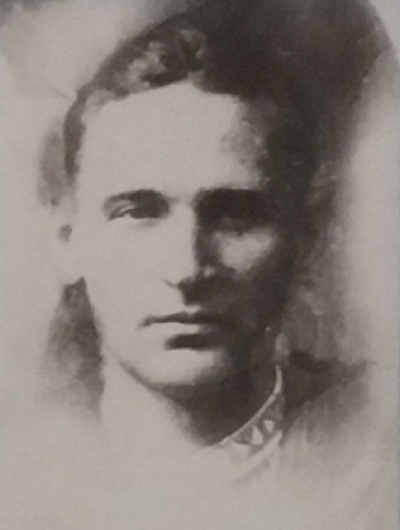
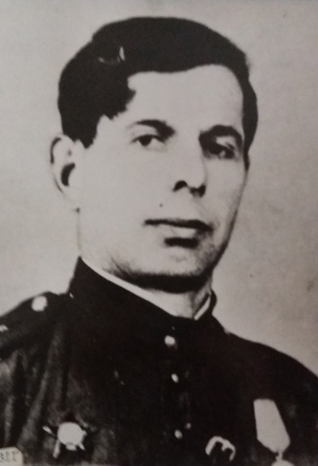
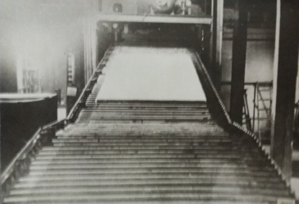
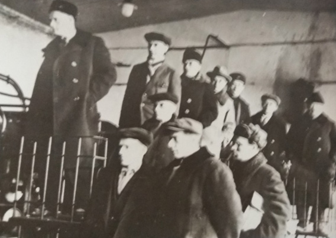

1927 - первое упоминание
Первое упоминание в архивных данных о предприятии было в 1927 году.
Этот завод в 1937 году решением Управления Химпрома Наркомлеспрома СССР передан в состав вновь построенного здесь в 1934 – 1936гг. завода «Изоплит».
Первым директором и начальником строительства предприятия был Корсаков Василий Тихонович.
Согласно дополнительных архивных данных на территории мыльной артели, принадлежащей частному предпринимателю, входящей в состав «Сампромсоюза», начинается строительство канифольного завода по проекту известного инженера, специалиста канифольного дела, частного собственника Вильнера И. Не успев начать строительство он трагически погиб.
Строительством продолжил заниматься его сын – специалист-химик Вильнер И., вызванный Кусто-Союзом из Москвы.

1928
Но уже в 1928 году стало ясно, что без помощи государства окончание строительства затянется. Поэтому были приняты все меры к скорейшему окончанию стройки с участием государственных средств. «Сампромсоюз» разогнан, проведена чистка мыльной артели. И уже в конце 1929 года канифольный завод был запущен в работу. Объединен с мыльной артелью и завод назван Новобелицкий канифольно-мыльный, который в 1941 году был разрушен и не восстанавливался.

1929
15 марта 1930 года на заводе проводится собрание, где директор завода Златин докладывает о перспективах работы завода и необходимости передачи его в ведение государства. Собрание принимает решение о передаче завода государству с подчинением Канифольно-Скипидарному Тресту, находящемуся в г. Минске. Сразу же на заводе начала действовать профсоюзная организация. Председателем завкома избран Пожарин. Совместно с заводом «Красный Химик» организована партячейка из пяти человек: Качановский, Златин, Шухатович, Давыдович, Пожарин и первым секретарем ее избран Качановский Иосиф Борисович, член ВКП(б) с 1924 года, который 31.10.1930г. был выдвинут на должность директора завода в связи с тем, что Златин направлялся на учебу на курсы директоров.

1930
С уходом Качановского И.Б. на должность директора секретарем п/ячейки избирается Пожарин, а председателем завкома – Барков. Качановский – делегат 1-й партконференции. Давыдович направляется на учебу в институт им. Плеханова. В 1932 году принято решение о реконструкции Новобелицкого канифольно-мыльного завода – страна нуждается в его продукции. И вот в течение 9-ти месяцев 1933 года идет работа по замене оборудования и внедрению новой технологии по методу инженера Курыгина, позволившего увеличить выработку готовой продукции в 4 – 6 раз, так докладывал на партсобрании 03.09.1933г. директор завода Патоцкий Хаим Шмулевич. Объединен с мыльной артелью и завод назван Новобелицкий канифольно-мыльный, который в 1941 году был разрушен и не восстанавливался.